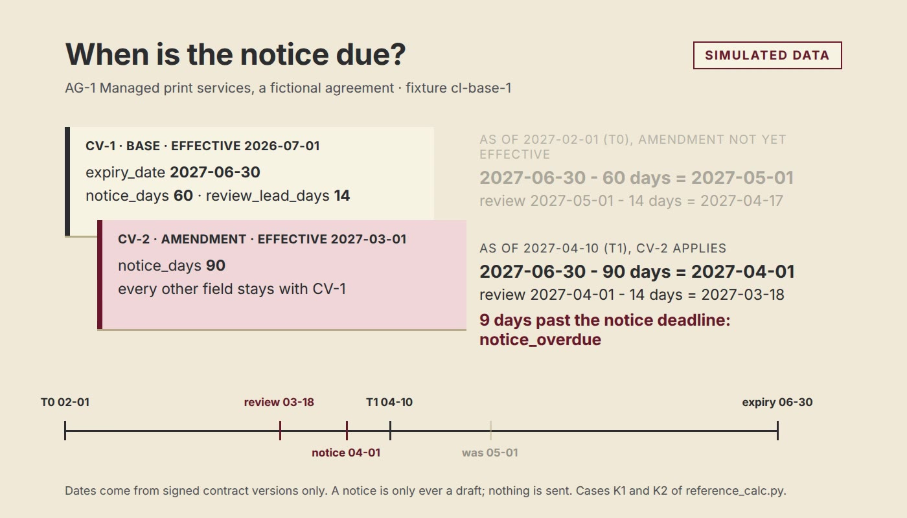

Workbench · Contracts · Renewal deadlines · PostgreSQL · FastAPI · React · 2026-11
Which Notice Deadline and Review Date Apply Today, and From Which Contract Version?
CommitLens: a synthetic renewal and notice-deadline workbench. It computes each agreement's notice deadline and internal review date from the signed contract versions in force, shows the arithmetic and the source version of every date, keeps the earlier schedule after an amendment, and drafts a notice without ever sending one. Nothing here is real data.
- Problem
- A contract owner has to know when to tell a supplier that an agreement will not renew. The date depends on which contract version is in force, which fields an amendment changed, the time…
- Role
- Built and written by Rishit Raj Mathur; the case study names its sources and checks.
- Tools
- Python 3.12 (independent standard-library reference calculator), PostgreSQL 16 (immutable evidence tables, guarded write functions, a service-login rule checked in CI), FastAPI, TypeScript + React + Vite (engine in the browser), Playwright, axe-core, Lighthouse, Vitest, GitHub Actions only; no local build, HyperFrames and Remotion renders, openpyxl and LibreOffice workbook
- Status
- Case study with a live demo
- Evidence
- Open CommitLens · Code on GitHub

Everything is synthetic: nine invented agreements and eleven contract versions in the fixture cl-base-1; nothing is legal advice and no notice is ever sent. The static demo runs the engine in the browser and the role picker gates nothing; the API is not hosted and has no authentication. Many verification cases print PARTIAL or DEFER and are not passes. The scenario-rows finding (AUDP13-108) is closed as scoped, with a LOW residual. Independent visual QA accepted the screens with two LOW items open; the motion stills have not been reviewed.
01The problem
A contract owner has to know when to tell a supplier that an agreement will not renew. The date depends on which contract version is in force, which fields an amendment changed, the time zone the dates live in and a weekend rule. A single spreadsheet date hides all of that.
02What I built
An obligation calendar, agreement evidence with the source version of every number, an amendment diff, an owner work queue, a renewal scenario labeled as an assumption, an overdue-exceptions view and an audit and export screen. A date that cannot be computed is shown as incomplete with the missing field named, never filled in. A recorded decision keeps the schedule it was made on and says when the live schedule has moved.
03How it was built
- 01
The decision and the contract
One written contract defines the schedule rules, the ten agreement classes (each agreement in exactly one), the roles and what is out of scope: sending anything, text extraction, jurisdiction logic and automatic renewal.
- 02
A hand fixture and an independent calculator
Known-answer cases are computed by hand and recomputed by a standard-library Python script that imports nothing from the app. In the full run it prints 31 pass, 16 partial, 52 defer and 0 fail over 99 case ids; a partial or deferred case is not counted as a pass.
- 03
Three implementations of one rule
The SQL functions, the API and the TypeScript engine implement the schedule rules; the engine is compared with the Python reference byte for byte by a unit test.
- 04
A service-login rule
The database login the API uses is reserved for the API service; direct SQL access to it is not supported. CI asserts that nothing is a member of it and that no other role can switch to it; credential custody and pg_hba.conf are operator tasks that CI cannot test.
- 05
Evidence
205 browser tests pass, axe finds no violations on every route at two widths, Lighthouse accessibility is 100. An Excel workbook recalculates 2,009 formula cells and reconciles 330 of 330 rows to the reference with a difference of exactly 0, given declared copied inputs.
04Results
Measured on the synthetic release candidate (one commit, f4f711c): manifest 99 cases = 31 pass, 16 partial, 52 defer, 0 fail; SQL suite 74 ids = 31 / 42 / 1; API suite 25 ids = 14 / 11 / 0 with 45 pytest tests; race suite 19 ids = 11 pass, 8 defer (no script yet); 45 unit tests; 205 browser tests; Lighthouse performance 99 to 100 and accessibility 100. Frame pacing of a click, hover, focus, input and scroll walk on a CI runner with software rendering and no video encoder: 60 mean fps at 1440x900 and at 390x844 (52.5 at 1440x900 while the video is being recorded). These describe generated data and this code; they say nothing about any real contract.
05What I'd do next
- Send the remaining seeded scenario overlays through the import route and write the HTTP steps of the 15 negative cases.
- Script the eight deferred race cases.
- Independent read of the motion stills.
- Real authentication and hosting before any use beyond the demo.